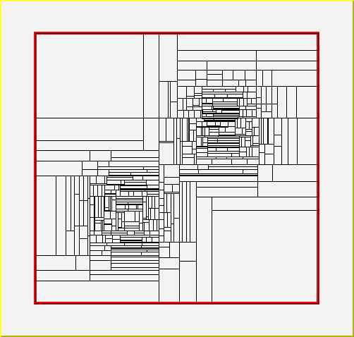
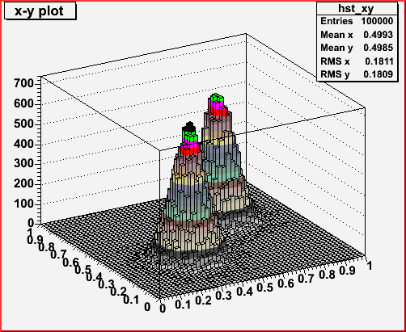
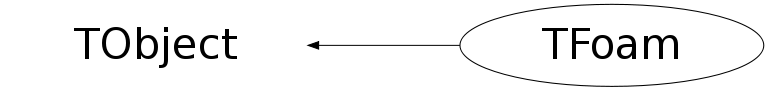
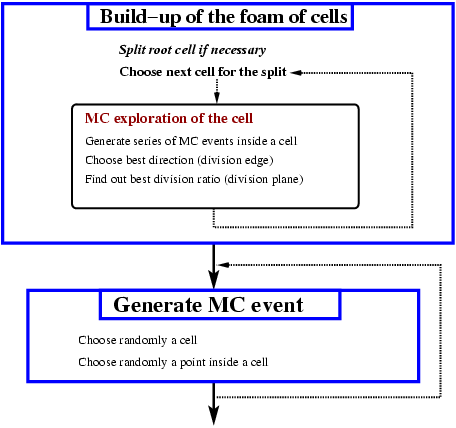
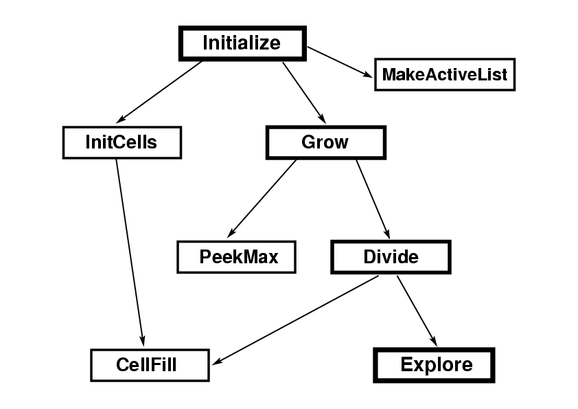
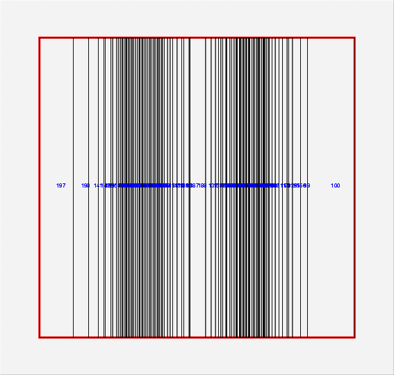
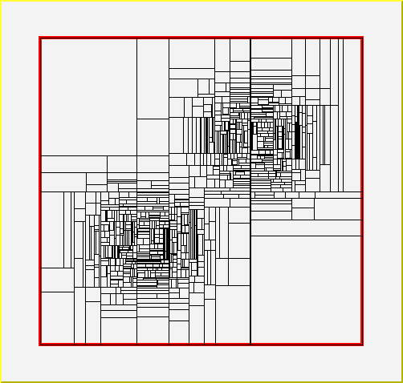

class TFoam: public TObject
FOAM Version 1.02M Authors: S. Jadach and P.Sawicki Institute of Nuclear Physics, Cracow, Poland Stanislaw. Jadach@ifj.edu.pl, Pawel.Sawicki@ifj.edu.pl What is FOAM for? * Suppose you want to generate randomly points (vectors) according to an arbitrary probability distribution in n dimensions, for which you supply your own subprogram. FOAM can do it for you! Even if your distributions has quite strong peaks and is discontinuous! * FOAM generates random points with weight one or with variable weight. * FOAM is capable to integrate using efficient "adaptive" MC method. (The distribution does not need to be normalized to one.) How does it work? FOAM is the simplified version of the multi-dimensional general purpose Monte Carlo event generator (integrator) FOAM. It creates hyper-rectangular "foam of cells", which is more dense around its peaks. See the following 2-dim. example of the map of 1000 cells for doubly peaked distribution:
FOAM is now fully integrated with the ROOT package. The important bonus of the ROOT use is persistency of the FOAM objects! For more sophisticated problems full version of FOAM may be more appropriate:See full version of FOAM
Simple example of the use of FOAM: Int_t kanwa(){ gSystem->Load("libFoam"); TH2D *hst_xy = new TH2D("hst_xy" , "x-y plot", 50,0,1.0, 50,0,1.0); Double_t *MCvect =new Double_t[2]; // 2-dim vector generated in the MC run TRandom3 *PseRan = new TRandom3(); // Create random number generator PseRan->SetSeed(4357); // Set seed TFoam *FoamX = new TFoam("FoamX"); // Create Simulator FoamX->SetkDim(2); // No. of dimensions, obligatory! FoamX->SetnCells(500); // No. of cells, can be omitted, default=2000 FoamX->SetRhoInt(Camel2); // Set 2-dim distribution, included below FoamX->SetPseRan(PseRan); // Set random number generator FoamX->Initialize(); // Initialize simulator, takes a few seconds... // From now on FoamX is ready to generate events according to Camel2(x,y) for(Long_t loop=0; loop<100000; loop++){ FoamX->MakeEvent(); // generate MC event FoamX->GetMCvect( MCvect); // get generated vector (x,y) Double_t x=MCvect[0]; Double_t y=MCvect[1]; if(loop<10) cout<<"(x,y) = ( "<< x <<", "<< y <<" )"<<endl; hst_xy->Fill(x,y); // fill scattergram }// loop Double_t mcResult, mcError; FoamX->GetIntegMC( mcResult, mcError); // get MC integral, should be one cout << " mcResult= " << mcResult << " +- " << mcError <<endl; // now hst_xy will be plotted visualizing generated distribution TCanvas *cKanwa = new TCanvas("cKanwa","Canvas for plotting",600,600); cKanwa->cd(); hst_xy->Draw("lego2"); }//kanwa Double_t sqr(Double_t x){return x*x;}; Double_t Camel2(Int_t nDim, Double_t *Xarg){ // 2-dimensional distribution for FOAM, normalized to one (within 1e-5) Double_t x=Xarg[0]; Double_t y=Xarg[1]; Double_t GamSq= sqr(0.100e0); Double_t Dist=exp(-(sqr(x-1./3) +sqr(y-1./3))/GamSq)/GamSq/TMath::Pi(); Dist +=exp(-(sqr(x-2./3) +sqr(y-2./3))/GamSq)/GamSq/TMath::Pi(); return 0.5*Dist; }// Camel2 Two-dim. histogram of the MC points generated with the above program looks as follows:
Canonical nine steering parameters of FOAM
Name | default | Description
kDim | 0 | Dimension of the integration space. Must be redefined!
nCells | 1000 | No of allocated number of cells,
nSampl | 200 | No. of MC events in the cell MC exploration
nBin | 8 | No. of bins in edge-histogram in cell exploration
OptRej | 1 | OptRej = 0, weighted; OptRej=1, wt=1 MC events
OptDrive | 2 | Maximum weight reduction, =1 for variance reduction
EvPerBin | 25 | Maximum number of the effective wt=1 events/bin,
| | EvPerBin=0 deactivates this option
Chat | 1 | =0,1,2 is the ``chat level'' in the standard output
MaxWtRej | 1.1 | Maximum weight used to get w=1 MC events
The above can be redefined before calling 'Initialize()' method,
for instance FoamObject->SetkDim(15) sets dimension of the distribution to 15.
Only kDim HAS TO BE redefined, the other parameters may be left at their defaults.
nCell may be increased up to about million cells for wildly peaked distributions.
Increasing nSampl sometimes helps, but it may cost CPU time.
MaxWtRej may need to be increased for wild a distribution, while using OptRej=0.
Past versions of FOAM: August 2003, v.1.00; September 2003 v.1.01
Adopted starting from FOAM-2.06 by P. Sawicki
Users of FOAM are kindly requested to cite the following work:
S. Jadach, Computer Physics Communications 152 (2003) 55.
Function Members (Methods)
public:
| TFoam() | |
| TFoam(const Char_t*) | |
| TFoam(const TFoam&) | |
| virtual | ~TFoam() |
| void | TObject::AbstractMethod(const char* method) const |
| virtual void | TObject::AppendPad(Option_t* option = "") |
| virtual void | TObject::Browse(TBrowser* b) |
| virtual void | Carver(Int_t&, Double_t&, Double_t&) |
| virtual Int_t | CellFill(Int_t, TFoamCell*) |
| virtual void | CheckAll(Int_t) |
| static TClass* | Class() |
| virtual const char* | TObject::ClassName() const |
| virtual void | TObject::Clear(Option_t* = "") |
| virtual TObject* | TObject::Clone(const char* newname = "") const |
| virtual Int_t | TObject::Compare(const TObject* obj) const |
| virtual void | TObject::Copy(TObject& object) const |
| virtual void | TObject::Delete(Option_t* option = "")MENU |
| virtual Int_t | TObject::DistancetoPrimitive(Int_t px, Int_t py) |
| virtual Int_t | Divide(TFoamCell*) |
| virtual void | TObject::Draw(Option_t* option = "") |
| virtual void | TObject::DrawClass() constMENU |
| virtual TObject* | TObject::DrawClone(Option_t* option = "") constMENU |
| virtual void | TObject::Dump() constMENU |
| virtual void | TObject::Error(const char* method, const char* msgfmt) const |
| virtual Double_t | Eval(Double_t*) |
| virtual void | TObject::Execute(const char* method, const char* params, Int_t* error = 0) |
| virtual void | TObject::Execute(TMethod* method, TObjArray* params, Int_t* error = 0) |
| virtual void | TObject::ExecuteEvent(Int_t event, Int_t px, Int_t py) |
| virtual void | Explore(TFoamCell* Cell) |
| virtual void | TObject::Fatal(const char* method, const char* msgfmt) const |
| virtual void | Finalize(Double_t&, Double_t&) |
| virtual TObject* | TObject::FindObject(const char* name) const |
| virtual TObject* | TObject::FindObject(const TObject* obj) const |
| virtual void | GenerCel2(TFoamCell*&) |
| virtual Option_t* | TObject::GetDrawOption() const |
| static Long_t | TObject::GetDtorOnly() |
| virtual const char* | TObject::GetIconName() const |
| virtual void | GetIntegMC(Double_t&, Double_t&) |
| virtual void | GetIntNorm(Double_t&, Double_t&) |
| virtual void | GetMCvect(Double_t*) |
| virtual Double_t | GetMCwt() |
| virtual void | GetMCwt(Double_t&) |
| virtual const char* | TObject::GetName() const |
| virtual Long_t | GetnCalls() const |
| virtual Long_t | GetnEffev() const |
| virtual char* | TObject::GetObjectInfo(Int_t px, Int_t py) const |
| static Bool_t | TObject::GetObjectStat() |
| virtual Option_t* | TObject::GetOption() const |
| virtual Double_t | GetPrimary() const |
| virtual void | GetPrimary(Double_t& prime) |
| virtual TRandom* | GetPseRan() const |
| virtual TFoamIntegrand* | GetRho() |
| virtual const char* | TObject::GetTitle() const |
| virtual Int_t | GetTotDim() const |
| virtual UInt_t | TObject::GetUniqueID() const |
| virtual const char* | GetVersion() const |
| virtual void | GetWtParams(Double_t, Double_t&, Double_t&, Double_t&) |
| virtual void | Grow() |
| virtual Bool_t | TObject::HandleTimer(TTimer* timer) |
| virtual ULong_t | TObject::Hash() const |
| virtual void | TObject::Info(const char* method, const char* msgfmt) const |
| virtual Bool_t | TObject::InheritsFrom(const char* classname) const |
| virtual Bool_t | TObject::InheritsFrom(const TClass* cl) const |
| virtual void | InitCells() |
| virtual void | Initialize() |
| virtual void | Initialize(TRandom*, TFoamIntegrand*) |
| virtual void | TObject::Inspect() constMENU |
| void | TObject::InvertBit(UInt_t f) |
| virtual TClass* | IsA() const |
| virtual Bool_t | TObject::IsEqual(const TObject* obj) const |
| virtual Bool_t | TObject::IsFolder() const |
| Bool_t | TObject::IsOnHeap() const |
| virtual Bool_t | TObject::IsSortable() const |
| Bool_t | TObject::IsZombie() const |
| virtual void | LinkCells() |
| virtual void | TObject::ls(Option_t* option = "") const |
| virtual void | MakeActiveList() |
| virtual void | MakeAlpha() |
| virtual void | MakeEvent() |
| void | TObject::MayNotUse(const char* method) const |
| virtual Double_t | MCgenerate(Double_t* MCvect) |
| virtual Bool_t | TObject::Notify() |
| void | TObject::Obsolete(const char* method, const char* asOfVers, const char* removedFromVers) const |
| static void | TObject::operator delete(void* ptr) |
| static void | TObject::operator delete(void* ptr, void* vp) |
| static void | TObject::operator delete[](void* ptr) |
| static void | TObject::operator delete[](void* ptr, void* vp) |
| void* | TObject::operator new(size_t sz) |
| void* | TObject::operator new(size_t sz, void* vp) |
| void* | TObject::operator new[](size_t sz) |
| void* | TObject::operator new[](size_t sz, void* vp) |
| TFoam& | operator=(const TFoam&) |
| virtual void | TObject::Paint(Option_t* option = "") |
| virtual Long_t | PeekMax() |
| virtual void | TObject::Pop() |
| virtual void | TObject::Print(Option_t* option = "") const |
| virtual void | PrintCells() |
| virtual Int_t | TObject::Read(const char* name) |
| virtual void | TObject::RecursiveRemove(TObject* obj) |
| void | TObject::ResetBit(UInt_t f) |
| virtual void | ResetPseRan(TRandom* PseRan) |
| virtual void | ResetRho(TFoamIntegrand* Rho) |
| virtual void | RootPlot2dim(Char_t*) |
| virtual void | TObject::SaveAs(const char* filename = "", Option_t* option = "") constMENU |
| virtual void | TObject::SavePrimitive(ostream& out, Option_t* option = "") |
| void | TObject::SetBit(UInt_t f) |
| void | TObject::SetBit(UInt_t f, Bool_t set) |
| virtual void | SetChat(Int_t Chat) |
| virtual void | TObject::SetDrawOption(Option_t* option = "")MENU |
| static void | TObject::SetDtorOnly(void* obj) |
| virtual void | SetEvPerBin(Int_t EvPerBin) |
| virtual void | SetInhiDiv(Int_t, Int_t) |
| virtual void | SetkDim(Int_t kDim) |
| virtual void | SetMaxWtRej(Double_t MaxWtRej) |
| virtual void | SetnBin(Int_t nBin) |
| virtual void | SetnCells(Long_t nCells) |
| virtual void | SetnSampl(Long_t nSampl) |
| static void | TObject::SetObjectStat(Bool_t stat) |
| virtual void | SetOptDrive(Int_t OptDrive) |
| virtual void | SetOptRej(Int_t OptRej) |
| virtual void | SetPseRan(TRandom* PseRan) |
| virtual void | SetRho(TFoamIntegrand* Rho) |
| virtual void | SetRhoInt(void* Rho) |
| virtual void | TObject::SetUniqueID(UInt_t uid) |
| virtual void | SetXdivPRD(Int_t, Int_t, Double_t*) |
| virtual void | ShowMembers(TMemberInspector& insp) |
| virtual void | Streamer(TBuffer& b) |
| void | StreamerNVirtual(TBuffer& b) |
| virtual void | TObject::SysError(const char* method, const char* msgfmt) const |
| Bool_t | TObject::TestBit(UInt_t f) const |
| Int_t | TObject::TestBits(UInt_t f) const |
| virtual void | TObject::UseCurrentStyle() |
| virtual void | Varedu(Double_t*, Int_t&, Double_t&, Double_t&) |
| virtual void | TObject::Warning(const char* method, const char* msgfmt) const |
| virtual Int_t | TObject::Write(const char* name = 0, Int_t option = 0, Int_t bufsize = 0) |
| virtual Int_t | TObject::Write(const char* name = 0, Int_t option = 0, Int_t bufsize = 0) const |
protected:
| virtual void | TObject::DoError(int level, const char* location, const char* fmt, va_list va) const |
| void | TObject::MakeZombie() |
Data Members
public:
| enum TObject::EStatusBits { | kCanDelete | |
| kMustCleanup | ||
| kObjInCanvas | ||
| kIsReferenced | ||
| kHasUUID | ||
| kCannotPick | ||
| kNoContextMenu | ||
| kInvalidObject | ||
| }; | ||
| enum TObject::[unnamed] { | kIsOnHeap | |
| kNotDeleted | ||
| kZombie | ||
| kBitMask | ||
| kSingleKey | ||
| kOverwrite | ||
| kWriteDelete | ||
| }; |
protected:
| Double_t* | fAlpha | [fDim] Internal parameters of the hyperrectangle |
| TFoamCell** | fCells | [fNCells] Array of ALL cells |
| TRefArray* | fCellsAct | Array of pointers to active cells, constructed at the end of foam build-up |
| Int_t | fChat | Chat=0,1,2 chat level in output, Chat=1 normal level |
| TString | fDate | Release date of FOAM |
| Int_t | fDim | Dimension of the integration/simulation space |
| Int_t | fEvPerBin | Maximum number of effective (wt=1) events per bin |
| TObjArray* | fHistDbg | Histograms of wt, for debug |
| TObjArray* | fHistEdg | Histograms of wt, one for each cell edge |
| TH1D* | fHistWt | Histogram of the MC wt |
| Int_t* | fInhiDiv | ! [fDim] Flags for inhibiting cell division |
| Int_t | fLastCe | Index of the last cell |
| TFoamMaxwt* | fMCMonit | Monitor of the MC weight for measuring MC efficiency |
| Double_t | fMCerror | and its error |
| Double_t | fMCresult | True Integral R from MC series |
| Double_t* | fMCvect | [fDim] Generated MC vector for the outside user |
| Double_t | fMCwt | MC weight |
| Int_t* | fMaskDiv | ! [fDim] Dynamic Mask for cell division |
| Double_t | fMaxWtRej | Maximum weight in rejection for getting wt=1 events |
| TMethodCall* | fMethodCall | ! ROOT's pointer to user-defined global distribution function |
| Int_t | fNBin | No. of bins in the edge histogram for cell MC exploration |
| Long_t | fNCalls | Total number of the function calls |
| Int_t | fNCells | Maximum number of cells |
| Long_t | fNEffev | Total number of effective events (wt=1) in the foam buildup |
| Int_t | fNSampl | No. of MC events, when dividing (exploring) cell |
| TString | fName | Name of a given instance of the FOAM class |
| Double_t | fNevGen | Total number of the generated MC events |
| Int_t | fNoAct | Number of active cells |
| Int_t | fOptDrive | Optimization switch =1,2 for variance or maximum weight optimization |
| Int_t | fOptPRD | Option switch for predefined division, for quick check |
| Int_t | fOptRej | Switch =0 for weighted events; =1 for unweighted events in MC |
| Double_t* | fPrimAcu | [fNoAct] Array of cumulative probability of all active cells |
| Double_t | fPrime | Primary integral R' (R=R'<wt>) |
| TRandom* | fPseRan | Pointer to user-defined generator of pseudorandom numbers |
| Int_t | fRNmax | Maximum No. of the rand. numb. requested at once |
| TFoamIntegrand* | fRho | ! Pointer to the user-defined integrand function/distribution |
| Double_t* | fRvec | [fRNmax] random number vector from r.n. generator fDim+1 maximum elements |
| Double_t | fSumOve | Total Sum of overveighted events |
| Double_t | fSumWt | |
| Double_t | fSumWt2 | Total sum of wt and wt^2 |
| TString | fVersion | Actual version of the FOAM like (1.01m) |
| Double_t | fWtMax | |
| Double_t | fWtMin | Maximum/Minimum MC weight |
| TFoamVect** | fXdivPRD | ! Lists of division values encoded in one vector per direction |
Class Charts
{kind=link}
{kind=link}
{kind=link}
{kind=link}

Function documentation
void Initialize(TRandom* , TFoamIntegrand* )
Basic initialization of FOAM invoked by the user. Mandatory! This method starts the process of the cell build-up. User must invoke Initialize with two arguments or Initialize without arguments. This is done BEFORE generating first MC event and AFTER allocating FOAM object and reseting (optionally) its internal parameters/switches. The overall operational scheme of the FOAM is the following:
This method invokes several other methods: InitCells initializes memory storage for cells and begins exploration process from the root cell. The empty cells are allocated/filled using CellFill. The procedure Grow which loops over cells, picks up the cell with the biggest ``driver integral'', see Comp. Phys. Commun. 152 152 (2003) 55 for explanations, with the help of PeekMax procedure. The chosen cell is split using Divide. Subsequently, the procedure Explore called by the Divide (and by InitCells for the root cell) does the most important job in the FOAM object build-up: it performs a small MC run for each newly allocated daughter cell. Explore calculates how profitable the future split of the cell will be and defines the optimal cell division geometry with the help of Carver or Varedu procedures, for maximum weight or variance optimization respectively. All essential results of the exploration are written into the explored cell object. At the very end of the foam build-up, Finally, MakeActiveList is invoked to create a list of pointers to all active cells, for the purpose of the quick access during the MC generation. The procedure Explore employs MakeAlpha to generate random coordinates inside a given cell with the uniform distribution. The above sequence of the procedure calls is depicted in the following figure:
void Initialize()
void InitCells()
Internal subprogram used by Initialize. It initializes "root part" of the FOAM of the tree of cells.
Int_t CellFill(Int_t , TFoamCell* )
Internal subprogram used by Initialize. It initializes content of the newly allocated active cell.
void Explore(TFoamCell* Cell)
Internal subprogram used by Initialize. It explores newly defined cell with help of special short MC sampling. As a result, estimates of true and drive volume is defined/determined Average and dispersion of the weight distribution will is found along each edge and the best edge (minimum dispersion, best maximum weight) is memorized for future use. The optimal division point for eventual future cell division is determined/recorded. Recorded are also minimum and maximum weight etc. The volume estimate in all (inactive) parent cells is updated. Note that links to parents and initial volume = 1/2 parent has to be already defined prior to calling this routine.
void Varedu(Double_t* , Int_t& , Double_t& , Double_t& )
Internal subrogram used by Initialize. In determines the best edge candidate and the position of the cell division plane in case of the variance reduction for future cell division, using results of the MC exploration run stored in fHistEdg
void Carver(Int_t& , Double_t& , Double_t& )
Internal subrogram used by Initialize. Determines the best edge-candidate and the position of the division plane for the future cell division, in the case of the optimization of the maximum weight. It exploits results of the cell MC exploration run stored in fHistEdg.
void MakeAlpha()
Internal subrogram used by Initialize. Provides random vector Alpha 0< Alpha(i) < 1
void Grow()
Internal subrogram used by Initialize. It grow new cells by the binary division process.
Long_t PeekMax()
Internal subprogram used by Initialize. It finds cell with maximal driver integral for the purpose of the division.
Int_t Divide(TFoamCell* )
Internal subrogram used by Initialize. It divides cell iCell into two daughter cells. The iCell is retained and tagged as inactive, daughter cells are appended at the end of the buffer. New vertex is added to list of vertices. List of active cells is updated, iCell removed, two daughters added and their properties set with help of MC sampling (TFoam_Explore) Returns Code RC=-1 of buffer limit is reached, fLastCe=fnBuf.
void MakeActiveList()
Internal subrogram used by Initialize. It finds out number of active cells fNoAct, creates list of active cell fCellsAct and primary cumulative fPrimAcu. They are used during the MC generation to choose randomly an active cell.
void ResetPseRan(TRandom* PseRan)
User may optionally reset random number generator using this method Usually it is done when FOAM object is restored from the disk. IMPORTANT: this method deletes existing random number generator registered in the FOAM object. In particular such an object is created by the streamer during the disk-read operation.
void SetRho(TFoamIntegrand* Rho)
User may use this method to set (register) random number generator used by the given instance of the FOAM event generator. Note that single r.n. generator may serve several FOAM objects.
void ResetRho(TFoamIntegrand* Rho)
User may optionally reset the distribution using this method
Usually it is done when FOAM object is restored from the disk.
IMPORTANT: this method deletes existing distribution object registered in the FOAM object.
In particular such an object is created by the streamer diring the disk-read operation.
This method is used only in very special cases, because the distribution in most cases
should be "owned" by the FOAM object and should not be replaced by another one after initialization.
void SetRhoInt(void* Rho)
User may use this to set pointer to the global function (not descending from TFoamIntegrand) serving as a distribution for FOAM. It is useful for simple interactive applications. Note that persistency for FOAM object will not work in the case of such a distribution.
void GenerCel2(TFoamCell*& )
Internal subprogram. Return randomly chosen active cell with probability equal to its contribution into total driver integral using interpolation search.
void MakeEvent(void)
User subprogram. It generates randomly point/vector according to user-defined distribution. Prior initialization with help of Initialize() is mandatory. Generated MC point/vector is available using GetMCvect and the MC weight with GetMCwt. MC point is generated with wt=1 or with variable weight, see OptRej switch.
Double_t MCgenerate(Double_t* MCvect)
User subprogram which generates MC event and returns MC weight
void GetIntegMC(Double_t& , Double_t& )
User subprogram. It provides the value of the integral calculated from the averages of the MC run May be called after (or during) the MC run.
void GetIntNorm(Double_t& , Double_t& )
User subprogram. It returns NORMALIZATION integral to be combined with the average weights and content of the histograms in order to get proper absolute normalization of the integrand and distributions. It can be called after initialization, before or during the MC run.
void GetWtParams(Double_t , Double_t& , Double_t& , Double_t& )
May be called optionally after the MC run. Returns various parameters of the MC weight for efficiency evaluation
void Finalize(Double_t& , Double_t& )
May be called optionally by the user after the MC run. It provides normalization and also prints some information/statistics on the MC run.
void SetInhiDiv(Int_t , Int_t )
This can be called before Initialize, after setting kDim It defines which variables are excluded in the process of the cell division. For example 'FoamX->SetInhiDiv(1, 1);' inhibits division of y-variable. The resulting map of cells in 2-dim. case will look as follows:
void SetXdivPRD(Int_t , Int_t , Double_t* )
This should be called before Initialize, after setting kDim It predefines values of the cell division for certain variable iDim. For example setting 3 predefined division lines using: xDiv[0]=0.30; xDiv[1]=0.40; xDiv[2]=0.65; FoamX->SetXdivPRD(0,3,xDiv); results in the following 2-dim. pattern of the cells:
void CheckAll(Int_t )
User utility, miscellaneous and debug. Checks all pointers in the tree of cells. This is useful autodiagnostic. level=0, no printout, failures causes STOP level=1, printout, failures lead to WARNINGS only
void RootPlot2dim(Char_t* )
Debugging tool which plots 2-dimensional cells as rectangles in C++ format readable for root